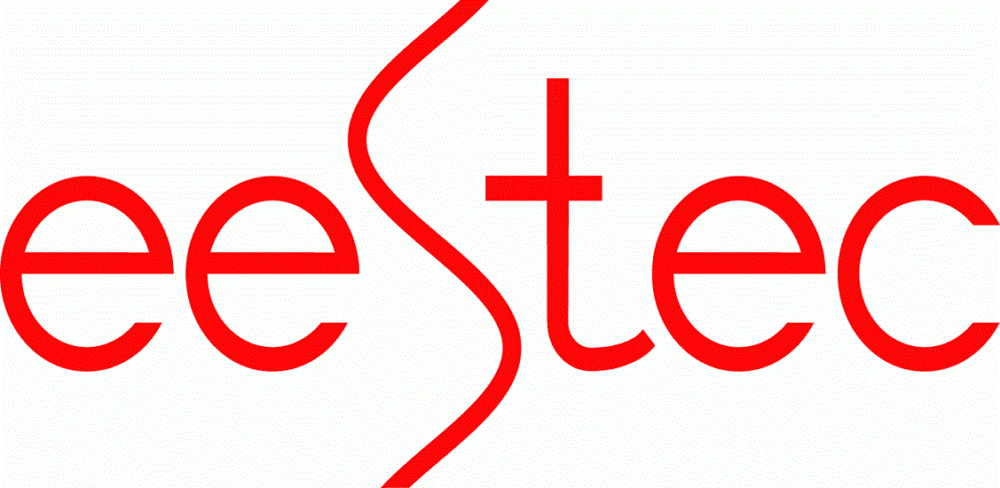
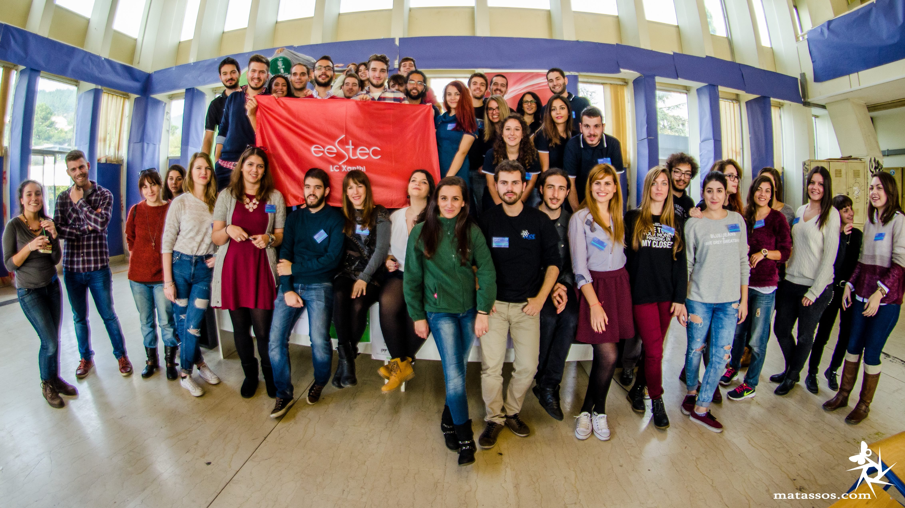
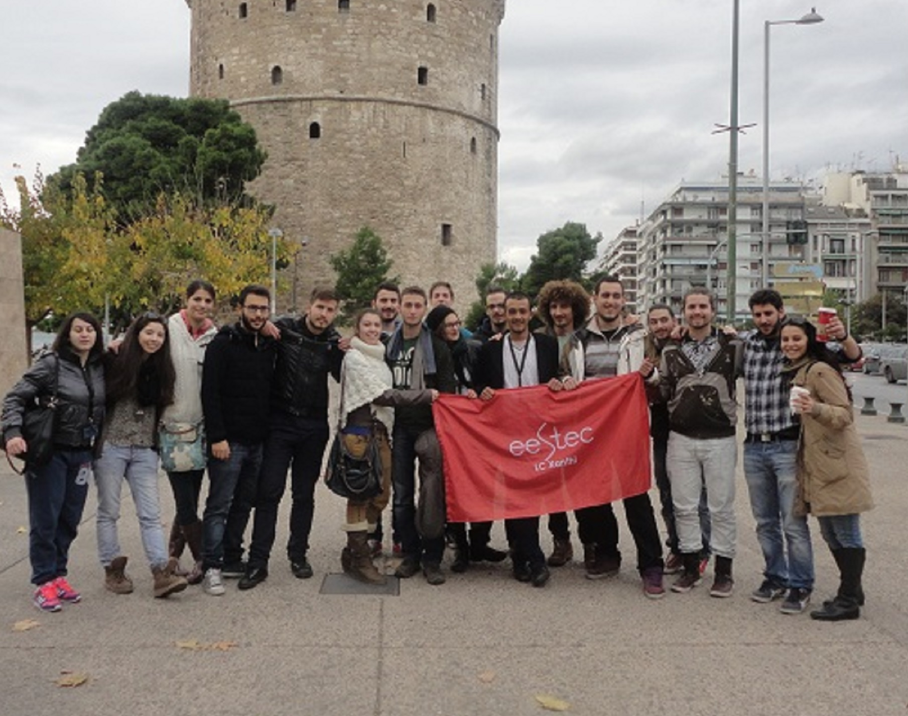
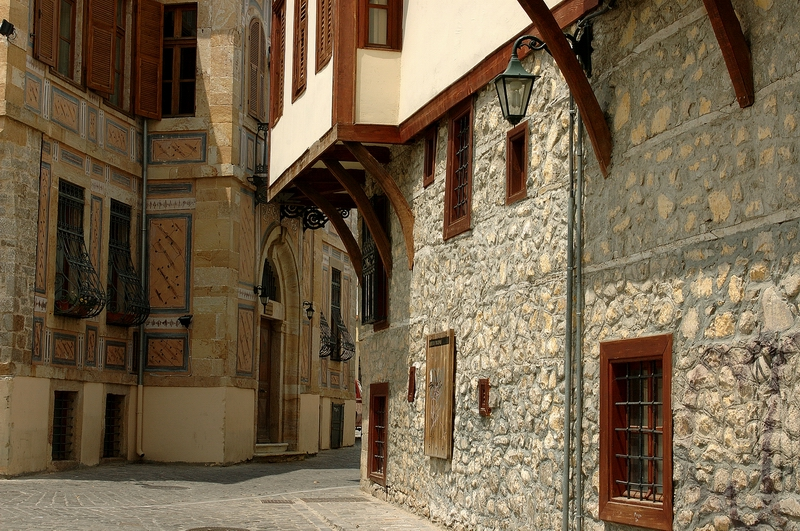

Τι ειναι η Eestec

Η ΕΕSTEC (Electrical Engineering STudent’s European assoCiation) είναι ένας εθελοντικός, μη κερδοσκοπικός και μη πολιτικός οργανισμός από φοιτητές Ηλεκτρολόγους Μηχανικούς και Μηχανικούς Η/Υ σε όλη την Ευρώπη. Στόχος της EESTEC είναι η ανάπτυξη ενός δικτύου επικοινωνίας και καλών σχέσεων μεταξύ φοιτητών Ηλεκτρολόγων Μηχανικών σε όλη την Ευρώπη. Έτσι επιτυγχάνεται αφενός η διάδοση και βελτίωση της γνώσης του αντικειμένου του Ηλεκτρολόγου Μηχανικού, και αφετέρου η εξοικείωση των νέων με πανεπιστήμια του εξωτερικού και η επαφή τους με διαφορετικές κουλτούρες. Προς αυτόν τον στόχο διοργανώνονται συνεχώς workshop ειδικού περιεχομένου με συμμετέχοντες φοιτητές από διάφορα πανεπιστήμια του εξωτερικού.
Τοπικη επιτροπη ξανθης

Το LC Xanthi αποτελεί τοπικό παράρτημα του παραπάνω οργανισμού με περισσότερα από 60 ενεργά μέλη, φοιτητές του Δημοκρίτειου Πανεπιστημίου Θράκης. Ιδρύθηκε το 2010 από μια μικρή ομάδα φοιτητών αλλά εξελίχτηκε τα τελευταία χρόνια σε έναν από τους σημαντικότερους και ενεργούς φοιτητικούς οργανισμούς , με συχνές δράσεις και πολλά μέλη με φρέσκες ιδέες και όρεξη τραβώντας τα βλέμματα τόσο σε τοπικό όσο και σε διεθνές επίπεδο! Μέχρι στιγμής μετράμε 4 events σε διεθνές επίπεδο και πάρα πολλά τοπικά (όπως σεμινάρια, Soft Skills trainings, ομιλίες, επισκέψεις σε εταιρείες κ.λ.π.). Το τοπικό παράρτημα διαθέτει αρκετές ομάδες οι οποίες καλύπτουν εάν ευρύ φάσμα δραστηριοτήτων, όπως:
- IT Team - Συντήρηση & δημιουργία περιεχομένου για το site
- Design Team - Υπεύθυνη για τη δημιουργία & σχεδίαση οποιουδήποτε προωθητικού υλικού.
- PR Team - Υπεύθυνη για την προώθηση του οργανισμού μας τόσο σε τοπικό όσο και σε διθνές επίπεδο.
- FR Team - Υπεύθυνη για πόρων για τη σωστή λειτουργία των τοπικών αλλά και των διεθνών δράσεων του τοπικού παραρτήματος.
Γιατί να συμμετέχεις στην EESTEC;

Αν σου αρέσει:
✔ ο εθελοντισμός
✔ η ανάπτυξη των ακαδημαϊκών και διαπροσωπικών δεξιοτήτων σου
✔ τα ταξίδια
✔ οι νέες γνωριμίες
✔ οι προκλήσεις
✔ η πραγματοποίηση και διαχείριση μεγάλων project
✔ αν είσαι άτομο με ιδέες και δημιουργικότητα
τότε θα λατρέψεις την EESTEC!
Έλα να μας γνωρίσεις και να μπεις σε κάποια ομάδα ανάλογα με τα ενδιαφέροντά σου, ή ακόμα καλύτερα επικοινώνησε μαζί μας για να ενημερωθείς για τη διαδικασία αίτησης σε ένα event του εξωτερικού για να έχεις μια καλύτερη εικόνα για το τι είναι η EESTEC.
Με την εγγραφή σας στην EESTEC, έχετε την δυνατότητα να συμμετέχετε σε τοπικά και διεθνή event σε όλη την Ευρώπη και όχι μόνο, να ταξιδέψετε σε όλη την Ευρώπη, να γνωρίσετε φοιτητές του αντικειμένου του Ηλεκτρολόγου Μηχανικού και να συνεργαστείτε μαζί τους, να γνωρίσετε την βιομηχανία άλλων χωρών και το εκπαιδευτικό τους σύστημα και να κερδίσετε αξέχαστες εμπειρίες! Ακόμα, έχετε τη δυνατότητα τοπικά, να πάρετε μέρος σε οργανώσεις διεθνών και τοπικών workshops, να συμμετέχετε σε ομάδες design, technology, promotion, fund raising κλπ., να παρακολουθήσετε Soft Skills trainings και να λάβετε μέρος σε διαγωνισμούς. Σε διεθνές επίπεδο, κάθε μέλος μπορεί να συμμετάσχει στα διεθνή δρώμενα της EESTEC, σαν μέλος της EESTEC International. Και φυσικά, μέσα σε όλα αυτά, να βελτιώσετε το βιογραφικό σας!
Η εγγραφή είναι δωρεάν και μπορείτε να την κάνετε εδώ!
ΠΡΟΕΔΡΕΙΟ
Πρόεδρος:
Γεώργιος Πέικος
geor19957@gmail.com
Αντιπρόεδρος:
Απόστολος Αβερκιάδης
tolitakis@gmail.com
Υπεύθυνος Επικοινωνίας:
Απόστολος Στεφανίδης
astefanidis94@gmail.com
Ταμίας:
Μιλτιάδης Αλέξης
alexmiltiadis@gmail.com
Υπεύθυνος Δημοσίων Σχέσεων:
Διονύσιος Φίλιππας
dionisisfil@gmail.com
Τμήμα Ηλεκτρολόγων Μηχανικών & Μηχανικών Υπολογιστών

Το τμήμα Ηλεκτρολόγων Μηχανικών και Μηχανικών Υπολογιστών (Η.Μ.Μ.Υ.) είναι μέρος του Δημοκρίτειου Πανεπιστημίου Θράκης (Δ.Π.Θ.), το οποίο περιλαμβάνει συνολικά 18 τμήματα με έδρες σε Ξάνθη, Κομοτηνή, Αλεξανδρούπολη και Ορεστιάδα. Το τμήμα ιδρύθηκε το 1975 στην Ξάνθη ως τμήμα Ηλεκτρολόγων Μηχανικών και αποτελούσε το δεύτερο τμήμα της Πολυτεχνικής Σχολής του Πανεπιστημίου Έπειτα μετονομάστηκε σε τμήμα Ηλεκτρολόγων Μηχανικών και Μηχανικών Υπολογιστών για να καλύψει τις ανερχόμενες ανάγκες λόγω της ανάπτυξης της επιστήμης των υπολογιστών. Σήμερα, το προσωπικό του τμήματος αποτελείται από περισσότερα από 45 μέλη ΔΕΠ και ένα μεγάλο αριθμό ερευνητικού και διοικητικού προσωπικού.
Το τμήμα αποτελείται από πέντε τομείς, τον τομέα Ενεργειακών Συστημάτων, τον τομέα Ηλεκτρονικής και Τεχνολογίας Συστημάτων Πληροφορικής, τον τομέα Τηλεπικοινωνιών και Διαστημικής, τον τομέα Φυσικής και Εφαρμοσμένων Μαθηματικών και τον τομέας Λογισμικού και Ανάπτυξης Εφαρμογών. Οι πανεπιστημιακές εγκαταστάσεις στεγάζονταν αρχικά μέσα στην πόλη της Ξάνθης. Παρόλα αυτά, από το 2008 ξεκίνησε η μετεγκατάσταση του Τμήματος στα νέα κτίρια στην Πανεπιστημιούπολη Ξάνθης στην περιοχή των Κιμμερίων, κοντά στις φοιτητικές εστίες. Το υψηλό επίπεδο εκπαίδευσης που προσφέρει και οι πολλές επιλογές στην ακαδημαϊκή εξέλιξη το κατατάσσουν στις πρώτες επιλογές των μελλοντικών φοιτητών.
Μπορείτε να μάθετε περισσότερα για το τμήμα εδώ.
XANTHI

Η Ξάνθη, πρωτεύουσα του ομώνυμου νομού, βρίσκεται στην περιοχή της Θράκης στην Βόρεια Ελλάδα, το σταυροδρόμι της Μαύρης Θάλασσας και του Αιγαίου, της Ευρώπης και της Ασίας. Εκει τα νερα του ποταμού Κόσυνθου ξεχύνονται στη πεδιάδα μετά απο ένα ταξίδι πολλών χιλιομέτρων στα βουνά της οροσειράς Ροδόπης, περιβαλλόμενα απο τρία μοναστήρια, τη Παναγία Καλάμους, τη Πανγία Αρχαγγελιώτισσα και τους Ταξιάρχες, όπως επίσης απο τα απομεινάρια της Βυζαντινής πόλης Ξανθείας. Με περίοου 65000 κατοίκους, η Ξάνθη είναι το εμπορικό και πνευματικό κέντρο της περιοχής και από τα χαρακτηριστικά της είναι η πολυπολιτισμικότητα και η αρμονική συνύπαρξη Χριστιανών και Μουσουλμάνων.
Η πολιτιστική ζωή της πόλης είναι πολύ έντονη. Το Καρναβάλι της Ξάνθης, διάσημο σε όλη την Ελλάδα, οι Γιορτές Παλιάς Πόλης, μοναδικές στο είδος και διάσημες για την πολυμορφία τους και το Φεστιβάλ Μάνου Χατζιδάκι είναι ανυπέρβλητα πολιτιστικά γεγονότα που αναβαθμίζουν τα πολιτιστικά χαρακτηριστικά της πόλης. Χωρισμένη στην Παλιά Πόλη, ένα μαγικό και γαλήνιο μέρος, και στο σύγχρονο κομμάτι της πόλης, η Ξάνθη δικαίως χαρακτηρίζεται ως "η πόλη με τα χίλια χρώματα" και με δύο πρόσωπα, το παλιό και το σύγχρονο, καθένα από τα οποία έχει τα δικά του μοναδικά χαρακτηριστικά .
Μπορείτε να μάθετε περισσότερα για την Ξάνθη εδώ.